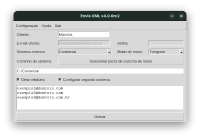
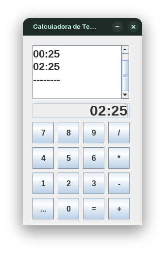
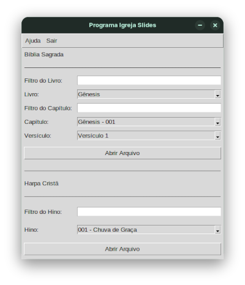
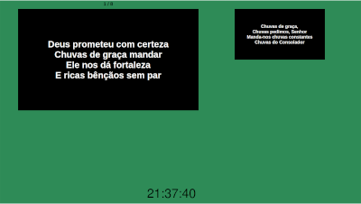
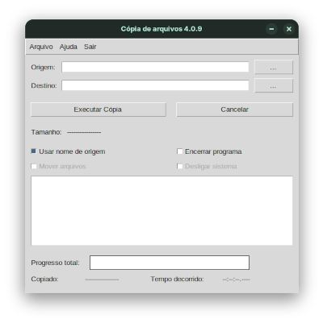
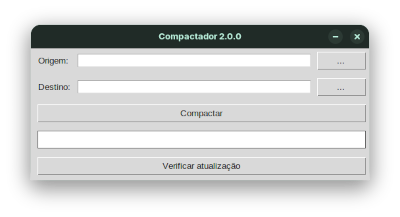
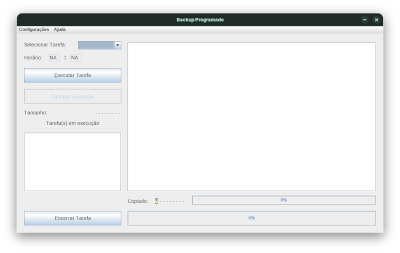
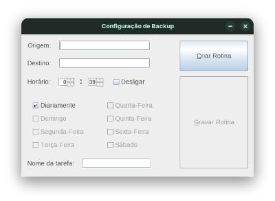
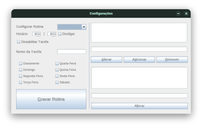
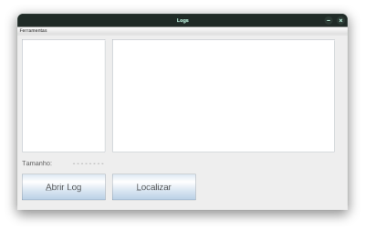

Programa desenvolvido para o envio de XMLs programado a cada mês


Programa para calculo de horário de funcionários
Programa para apresentação de slides da bíblia e Hinos da Harpa


Programa para a cópia agilizada de arquivos


Programa para Backup automatizado para mídias externas de preferência



